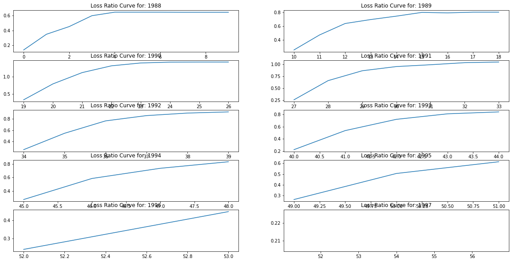
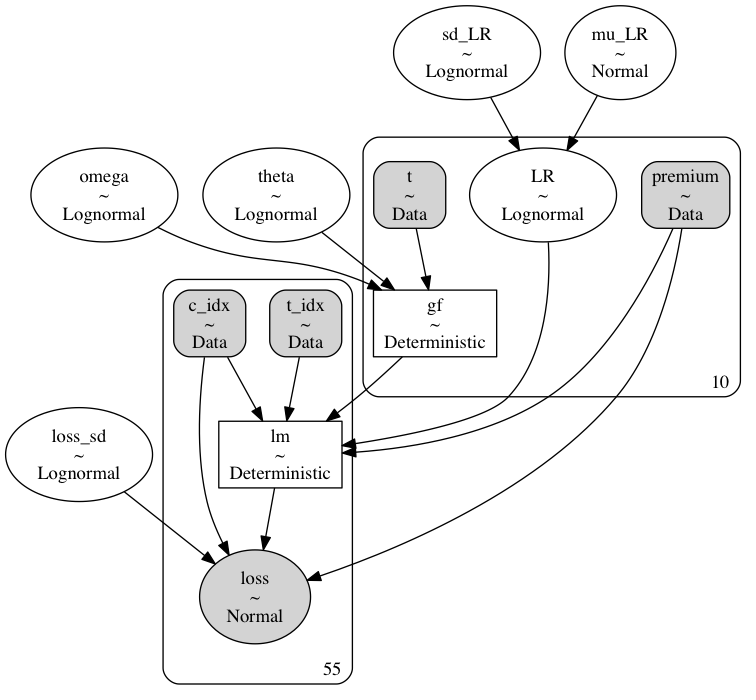
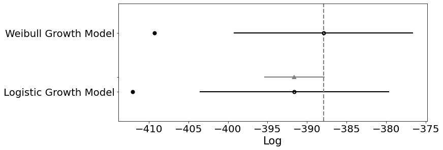

params = {'mu_LR': [0, 0.5], 'sd_LR': [0, 0.5], 'loss_sd': [0, .7], 'omega': [0, .5], 'theta': [0, .5],
'tune': 2000, 'target_accept':.9}
def make_model(model_data, params, growth_function ='logistic'):
with pm.Model(coords=coords) as basic_model:
# Priors for unknown model parameters
mu_LR = pm.Normal('mu_LR', params['mu_LR'][0], params['mu_LR'][1]);
sd_LR = pm.Lognormal('sd_LR', params['sd_LR'][0], params['sd_LR'][1]);
LR = pm.Lognormal('LR', mu_LR, sd_LR, dims='cohort')
loss_sd = pm.Lognormal('loss_sd', params['loss_sd'][0], params['loss_sd'][1]);
## Parameters for the growth factor
omega = pm.Lognormal('omega', params['omega'][0], params['omega'][1]);
theta = pm.Lognormal('theta', params['theta'][0], params['theta'][1]);
t = pm.Data("t", t_values, dims='t_values')
if growth_function == 'logistic':
gf = pm.Deterministic('gf', (t**omega / (t**omega + theta**omega)), dims='t_values')
else:
gf = pm.Deterministic('gf', 1-(pm.math.exp(-(t/theta)**omega)), dims='t_values')
## Premium
prem = pm.Data("premium", premium, dims='cohort')
t_indx = pm.Data("t_idx", t_idx, dims='obs')
cohort_idx = pm.Data('c_idx', cohort_id, dims='obs')
lm = pm.Deterministic('lm', LR[cohort_idx] * prem[cohort_idx] *gf[t_indx], dims=('obs'))
# Likelihood (sampling distribution) of observations
loss = pm.Normal('loss', lm, (loss_sd * prem[cohort_idx]), observed=loss_real, dims='obs')
prior_checks = pm.sample_prior_predictive(samples=100, random_seed=100)
idata = az.from_pymc3(prior=prior_checks)
trace = pm.sample(return_inferencedata=True, tune=params['tune'], init="adapt_diag",
target_accept=params['target_accept'])
idata.extend(trace)
ppc = pm.sample_posterior_predictive(
trace, var_names=["loss", "LR", "lm"], random_seed=100)
ppc = az.from_pymc3(posterior_predictive=ppc)
idata.extend(ppc)
return basic_model, idataMost days we face an infinite horizon of future decisions without being overwhelmed. A sequence of such decisions can compound, or reduce that certainty. But we tend to focus on the exaggerated drama of the momentous choice. Even when change is gradual and cumulative, history tells of a tale of pivot points, epic junctures and transformative events. Two paths diverge in a woods and we choose one. An array of possibilities suddenly open before us, or gets collapsed into a cul de sac. We weigh the options differently according to our needs and desires and pursue strategies to maximise our goals.
Incorporating uncertainty Leonard J. Savage famously showed that the optimal weights on each desire are proportional to their probabilities if we seek to maximise our expected gains. In particular, he showed that if we reason with probabilities our outcomes will the dominate all other methods for mitigating uncertainty. This alone should serve to motivate probabilisitic modelling, but we want to show concretely how this translates to making decisions under uncertainty. We’ll first show how such considerations underwrite a slew of familiar decision rules, and then how these methods can be applied to problem of reserving enough premium to cover costs accruing against insurance contracts. In both cases a concern for accuracy is implict.
Choice, Comparison and Probability
Not all problems can be expressed with a generative probability model. More pertinently, even if the problem is expressable, it is a fine art to aptly approximate the real process in the lexicon of familiar probability distributions. But there are benefits to the effort. A probability model allows direct comparisons of theories about the data. If we postulate some explanatory theory which is parameterised with the vector \(\mathbf{T\_{\beta}}\), where \(\beta\) is governed by an explicit probability model, then we are able to state the ratio of likelihoods for any observed data comparing theories \(\mathbf{T\_{\beta}}, \mathbf{T\_{\beta^{1}}}\).
\[ \frac{p( D | \mathbf{T}_{\beta^{1}})}{p(D | \mathbf{T}_{\beta})} \]
This style of comparison underwrites most decision rules as we set bounds on acceptable divergences. In particular, we see how the special case of the Neyman Pearson lemma (which underwrites most simple hypothesis testing) is an instance of a just such a liklihood ratio comparison. We follow the presentation of Moritz Hardt and Benjamin Recht in their Patterns, Prediction and Actions.
Loss functions and Ratio Tests
Imagine we frame the cost or loss of incorrectly choosing amongst our theories under uncertainty.Then the question becomes one of expected loss. Define \(l(T, T\_1)\) as the loss incurred when choosing \(T\) when \(T\_1\) is true. Then the expected loss in light of the data is calculated as:
\[ (1): E(l(T_{\beta} , T) | D) = l(T_{\beta} , T_{\beta})p(T_{\beta} | D) + l(T_{\beta} , T_{\beta^{1}})p(T_{\beta^{1}} | D) \]
\[ (2): E(l(T_{\beta^{1}} , T) | D) = l(T_{\beta^{1}} , T_{\beta})p(T_{\beta} | D) + l(T_{\beta^{1}} , T_{\beta^{1}})p(T_{\beta^{1}} | D) \]
We want to choose the theory with least expected loss. Assume (1) \(\geq\) (2), then
\[ l(T_{\beta} , T_{\beta})p(T_{\beta} | D) + l(T_{\beta} , T_{\beta^{1}})p(T_{\beta^{1}} | D) \geq l(T_{\beta^{1}} , T_{\beta})p(T_{\beta} | D) + l(T_{\beta^{1}} , T_{\beta^{1}})p(T_{\beta^{1}} | D) \]
manipulating:
\[ l(T_{\beta} , T_{\beta^{1}})p(T_{\beta^{1}} | D) \geq l(T_{\beta^{1}} , T_{\beta})p(T_{\beta} | D) - l(T_{\beta} , T_{\beta})p(T_{\beta} | D) + l(T_{\beta^{1}} , T_{\beta^{1}})p(T_{\beta^{1}} | D) \]
grouping:
\[ l(T_{\beta} , T_{\beta^{1}})p(T_{\beta^{1}} | D) \geq p(T_{\beta} | D)(l(T_{\beta^{1}} , T_{\beta}) - l(T_{\beta} , T_{\beta})) + l(T_{\beta^{1}} , T_{\beta^{1}})p(T_{\beta^{1}} | D) \]
rearraging:
\[ (l(T_{\beta} , T_{\beta^{1}}) - l(T_{\beta^{1}} , T_{\beta^{1}}))p(T_{\beta^{1}} | D) \geq p(T_{\beta} | D)(l(T_{\beta^{1}} , T_{\beta}) - l(T_{\beta} , T_{\beta})) \]
\[ p(T_{\beta^{1}} | D) \geq p(T_{\beta} | D)\frac{(l(T_{\beta^{1}} , T_{\beta}) - l(T_{\beta} , T_{\beta}))}{(l(T_{\beta} , T_{\beta^{1}}) - l(T_{\beta^{1}} , T_{\beta^{1}}))} \]
\[ \frac{p(T_{\beta^{1}} | D)}{p(T_{\beta} | D)} \geq \frac{(l(T_{\beta^{1}} , T_{\beta}) - l(T_{\beta} , T_{\beta}))}{(l(T_{\beta} , T_{\beta^{1}}) - l(T_{\beta^{1}} , T_{\beta^{1}}))} \]
which by Bayes Rule:
\[ \frac{\frac{p(D | T_{\beta^{1}})p(T_{\beta^{1}})}{p(D)}}{\frac{p(D | T_{\beta})p(T_{\beta})}{p(D)}} \geq \frac{(l(T_{\beta^{1}} , T_{\beta}) - l(T_{\beta} , T_{\beta}))}{(l(T_{\beta} , T_{\beta^{1}}) - l(T_{\beta^{1}} , T_{\beta^{1}}))} \]
which cancels to become:
\[ \frac{p(D | T_{\beta^{1}})p(T_{\beta^{1}})}{p(D | T_{\beta})p(T_{\beta})} \geq \frac{(l(T_{\beta^{1}} , T_{\beta}) - l(T_{\beta} , T_{\beta}))}{(l(T_{\beta} , T_{\beta^{1}}) - l(T_{\beta^{1}} , T_{\beta^{1}}))} \]
\[ \Rightarrow \frac{p(D | T_{\beta^{1}})}{p(D | T_{\beta})} \geq \frac{p(T_{\beta})(l(T_{\beta^{1}} , T_{\beta}) - l(T_{\beta} , T_{\beta}))}{p(T_{\beta^{1}})(l(T_{\beta} , T_{\beta^{1}}) - l(T_{\beta^{1}} , T_{\beta^{1}}))} \]
which shows how each expected loss calculation between two theories reduces to a likelihood ratio test, where we have a specific threshold for accepted preference. The preferred theory dominates the other just when the ratio of their likelihood exceeds that threshold. Therefore our estimate of the correct theory \(\hat{\mathbf{T}}\) is characterised by this comparison.
\[ \hat{\mathbf{T}} = \mathbb{1} \Bigg[ \frac{p( D | \mathbf{T}_{\beta^{1}})}{p(D | \mathbf{T}_{\beta})} \geq \eta \Bigg] \]
Hardt and Recht show a number of the very familiar procedures reduce to likelihood ratio tests with more or less constraints on threshold priors or loss functions. For instance, the (MAP) maximum a posteriori decision rule emerges naturally as a likelihood ratio test when we set the \(l(T, T) = l(\neg T, \neg T) = 0\) and \(l(T, \neg T) = l(\neg T, T) = 1\) This results in the following decision rule:
\[ \hat{\mathbf{T}} = \mathbb{1} \Bigg[ \frac{p( D | \mathbf{T}_{\beta^{1}})}{p(D | \mathbf{T}_{\beta})} \geq \frac{p(\mathbf{T_{\beta}})}{p(\mathbf{T_{\beta^{1}}})} \Bigg] \]
This is a particularly natural decision rule since it relies in how much we have learned about the likely theories (after conditioning on the data) relative to our prior commitments.
Optimising Success and and Failure Rates
In the binary classification case we can compare two hypotheses directly while aiming to maximise some measure of accuracy with a high probability. This requires that we express our decision rule as some selective mapping over our data points in light of the theories.
\[ \hat{\mathbf{d}}: \{ \mathbf{T_{\beta}}, \mathbf{T\_{\beta^{1}}} \} \times D \mapsto \{ False, True \} \]
With this set up the Neyman Pearson lemma states that any attempt to optimise our rule so that we maximise the True positive rate (TPR) while we minimise our False positive rate (FPR) subject to a constraint is equivalent to a likelihood ratio test.
\[ \text{ maximise TPR: } p(\hat{\mathbf{d}} \text{ is True} | \mathbf{T_\beta}) \] \[ \text{ subject to FPR: } p(\hat{\mathbf{d}} \text{ is True} | \mathbf{T_\beta^{1}}) \leq \alpha \]
This follows because the optimisation task does not require specific information about the prior probabilities. The TPR and FPR terms likelihood terms, so we can construct a loss function such that the decision rule is equivalent to a simple likelihood ratio test.
Lemma 1. Neyman-Pearson Lemma The optimal probabilistic decision rule that maximizes TPR with an upper bound on FPR is a deterministic likelihood ratio test.
The proof is short and elaborated in Patterns, Predictions and Actions, but the key point is that a likelihood ratio test can be constructed to mirror this optimisation constraint with appropriate modifications to our priors over both theories.
Proof. Let \(R\) be a decision rule such that
\[ \Bigg[ \frac{p( \hat{\mathbf{d}} | \mathbf{T}_{\beta^{1}})}{p(\hat{\mathbf{d}} | \mathbf{T}_{\beta})} \geq \eta \Bigg] \text{ where FPR = } \alpha \] Then let \(\tau\) be the TPR of R. Keeping the likelihood terms untouched we’re free to manipulate the priors so that
\[ \frac{p(\mathbf{T_{\beta}})}{p(\mathbf{T_{\beta^{1}}})} = \frac{1}{1 + \eta} / \frac{\eta}{1 + \eta} = \frac{1+\eta}{(1+\eta)\eta} = \eta\]
which is just the likelihood ratio test MAP rule above. Then let \(tpr\) and \(fpr\) be the true postive rate and false postive rate of an alternative rule \(R^{1}\) with \(fpr \leq \alpha\) implying $ p({}) fpr p({}) $. Adding to both sides:
\[ (1) \text{ } p(\mathbf{T}_{\beta}) fpr + p(\mathbf{T}_{\beta^{1}})(1- tpr) \leq p(\mathbf{T}_{\beta}) \alpha + p(\mathbf{T}_{\beta^{1}})(1- tpr) \]
Assume \(fpr < \alpha\) then unpacking a bit we see by complementarity that:
\[ \frac{fp}{neg} < \frac{FP}{neg} \text{ and since } (1-tpr) = \frac{fn}{pos} , (1-\tau) = \frac{FN}{pos} \text{ implies } (1-\tau) < (1 - tpr) \]
\[ \Rightarrow (2) \text{ } p(\mathbf{T}_{\beta}) \alpha + p(\mathbf{T}_{\beta^{1}})(1- \tau) \leq p(\mathbf{T}_{\beta})fpr + p(\mathbf{T}_{\beta^{1}})(1- tpr) \]
Alternatively \(fpr = \alpha\) and (2) folllows quickly. In either case (1) & (2) imply:
\[ (3) p(\mathbf{T}_{\beta}) \alpha + p(\mathbf{T}_{\beta^{1}})(1- \tau) \leq \text{ } p(\mathbf{T}_{\beta}) fpr + p(\mathbf{T}_{\beta^{1}})(1- tpr) \leq p(\mathbf{T}_{\beta}) \alpha + p(\mathbf{T}_{\beta^{1}})(1- tpr) \]
which implies that \(tpr \leq \tau\) in all cases.
Which is enough to complete the proof since \(R^{1}\) was arbitrary, we have shown that \(R\) maximises TPR with a fixed FPR.
So, in practice, optimisation amounts to the modification of these priors. Our priors are adjusted as hyper-parameters as we tune them to achieve optimal classification performance and generalisability.
Example: Expected Loss Curves
Imagine an insurer seeks to reserve enough of their premium to cover their expected losses. Then month on month we need to estimate the approriate loss ratio and project those losses over the ensuing months. This problem has a natural expression in the Bayesian setting. As can be seen in Stan language case study here
We’ll write up the model in python’s PYMC3 framework and walk through the code. The main point to see here is that we are trying to estimate the losses accruing the a given cohort of insurance policies. So we are estimating in turn both the loss ratio and growth curves. We’ll canvas two options for the growth curves, one based on the logistic curve and another based on the Weibull function. The empirical loss curves show a particular growth curve which rises and plateaus as we step through time.

The modelling challenge is to determine both the probable loss ratios for a given year’s premium and the manner in which the most probable curvature for the accruing losses. The range of probable realisations are, in the Bayesian setting, constrained by the distributions used for the prior probabilities. In our model we need specifications for the priors governing the loss ratios for each year, and the growth factors for each subsequent year. These are combined to calculate the ultimate losses as a growing proportion of the annual premium. We use lognormal priors for to loosely constrain our prior distributions above zero without a fixed upper bound. The growth factors are modeled using either a logistic function over theta and omega at each subsequent year \(t\).
\[t^{\omega} / (t^{\omega} + \theta^{\omega})\]
or
\[ 1 - e^{-(t/ \theta)^{\omega}} \]
We set priors for these time-based parameters too, so that by conditioning on the observed data we may learn and update our beliefs about the likely curvature of the growth as we step through time.

As we can see here the model has a hierarchical structure, where we have specified a series of priors for each of the features we wish to model. The main call outs are that we model observed cumulative losses ‘loss’ as the likelihood based on the prior parameters of an expected loss ratio ‘LR’, against an input dollar premium, and a latent growth factor ‘gf’ which increases over time. These are combined in the final loss calculation:
\[ (premium * LR_{j})*gf_{i} \]
The benefits of using a hierarchical structure is that we can capture the variance of the loss ratios across the years, and this uncertainty propagates through our estimates of the growth parameters fleshing out the range of plausible loss curves. The code to put this altogether is below.
Running these models generates enough sample data to plot some posterior predictive checks and test that our model fits well with the observed data. But crucially we also see a range of plausible curves. These are the probable range of alternatives which can be used to hedge against a range of losses rather than merely expected losses.

Fundamentally we want to model the shape of the curve and our question remains which candidate model is better? Which should we choose to reserve enough premium against future costs?
Model Comparison
We’ve seen above how likelihood ratio tests may be used to assess how each model fits the observed data. But it is quite another to determine how the model generalises outside of sample. There are a number complexities to computing model comparisons for Bayesian models, but the state of the art relies on information theoretic measures such as AIC, BIC and WAIC or Leave one out cross-validation methods. Information Criteria mostly rely on some comparison of likelihood as described above, but with some additional controls for the complexity of each model. The cross validation methods asseses predictive fit by successively partitioning the data into training and test sets where the accuracy of the fit is assessed by predicting on the test set. The details of the computation are a little complex but Aki Vehtari has a nice tutorial here. The output of the LOO test ranks each model according to their relative accuracy.
| rank | loo | p_loo | d_loo | weight | se | dse | warning | loo_scale | |
|---|---|---|---|---|---|---|---|---|---|
| Weibull Growth Model | 0 | -387.915 | 10.6734 | 0 | 0.811983 | 11.1849 | 0 | True | log |
| Logistic Growth Model | 1 | -391.599 | 10.2344 | 3.68346 | 0.188017 | 11.874 | 3.81681 | True | log |

In our case we can see that the Weibull growth model is deemed slightly more accurate than the logistic model. Allowing us to lean on criteria of predictive accuracy in choosing our model specification.
Conclusion: Confidence in Point Estimates are Unearned.
This discussion serves to show the wide applicability of Bayesian decision theory and its implicit role in many of the typical frequentist decision rules and model comparison tests. The role and flexibility of the priors in those decision rules suggests that it’s better to be aware of the specification of the prior rather than assume their use is innocent. More positively the Bayesian approach to decision making benefits from our ability to sample directly from the posterior and evaluate probable loss across an entire range of the probability distribution. The gains of this perspective are a clarity and confidence that cannot come from decisions made on the comparison of simple point estimates.
More concretely, we’ve seen an explicit model of loss-curve generation where we’ve specified the priors and constraints as appropriate and varied the parameters to test and evaluate competing theories in an transparent probabilisitc framework. This is not a black box model or an obscure algorithm, but a chain of reasoning embedded in code. Any decision worth making is worth the effort required to trace it’s dimensions thouroughly. The value of the exercise stems as much from complexities and pitfalls discovered in the modelling process as the ultimate the decision it enables. There is then something cheap about an alternative model which fails to capture the richness of the data generating process and settles for a simple point estimate comparison. Perhaps we’re guilty of a sunk-costs fallacy - valuing the model for the effort it took to make rather than it’s genuine usefulness, but at least Bayesian models enforce awareness of choices made and assumptions accepted. The tangled network-graph of influence and dependencies traces out a series of discoveries. Our conclusions rest on our best understanding of the process and our decisions are justified in light of the full range of each candidate probability distribution and our explanations can be traced back through the web of these beliefs.